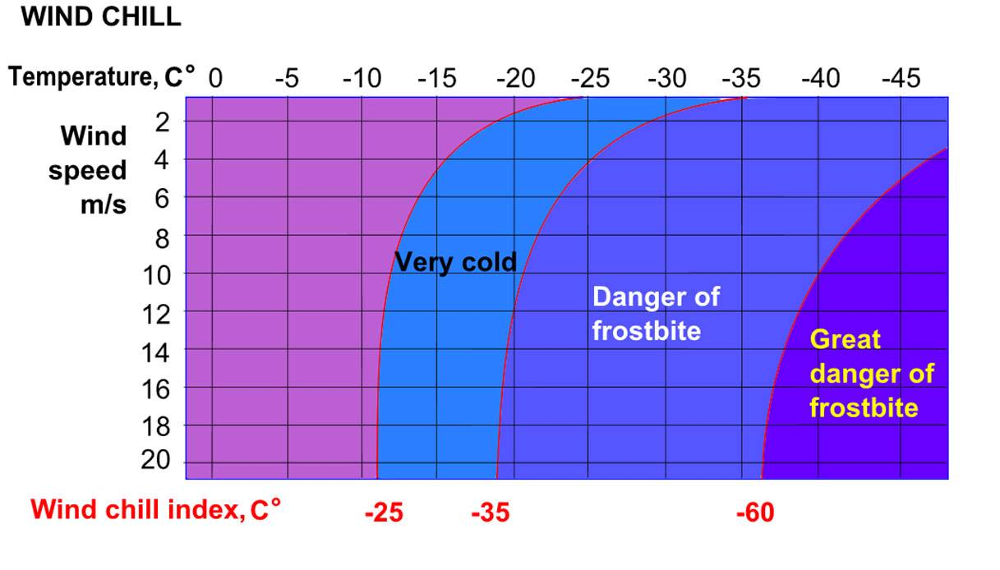
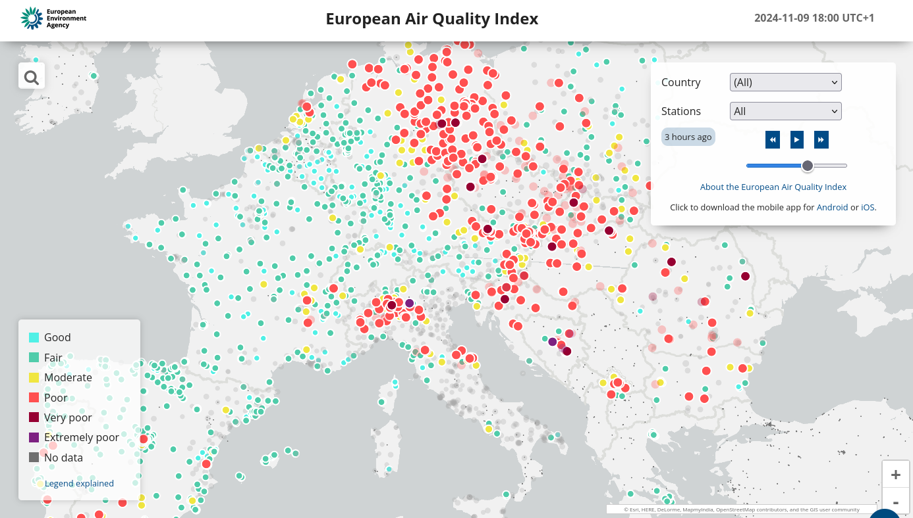

Biometeorologia umana¶
La biometeorologia è una disciplina scientifica interdisciplinare che analizza le interazioni tra la biosfera e l'atmosfera terrestre. Questa branca della meteorologia si focalizza sull'influenza delle condizioni meteo come temperatura, pressione, umidità e intensità della radiazione solare sugli esseri viventi, inclusi piante, animali e esseri umani.
Indici Termici¶
Gli effetti dell'ambiente termico sugli esseri umani sono meglio determinati con l'ausilio di indici termici basati sul bilancio energetico del corpo umano.
Applicazioni comuni sono la PMV (Predicted MeanVote) (Fanger 1972), la PET (Physiologically Equivalent Temperature) (VDI 1998; Höppe 1999; Matzarakis et al. 1999), la SET* (Standard Effective Temperature) (Gagge et al. 1986) o Outdoor Standard Effective Temperature (Out_SET*) (Spagnolo e de Dear 2003) e la Temperatura percepita (Tinz e Jendritzky2003).
Questi indici termici, ben documentati, hanno obiettivi diversi, ma sono essenzialmente combinazioni diverse dello stesso insieme di importanti parametri meteorologici e termofisiologici (Matzarakis 2001).
Sfortunatamente, i dati su molti di questi parametri, come le onde corte e lunghe, non sono generalmente disponibili nelle registrazioni climatiche. Di conseguenza, le valutazioni climatiche e gli studi sul comfort termico sono spesso ricorsi all'uso di indici climatici che non includono questi fattori chiave. Ad esempio, il rapporto dell'Intergovermental Panel onClimate Change (IPCC 2001) descrive gli effetti del tempo e del clima sull'uomo con un semplice indice basato sulla combinazione di temperatura dell'aria e umidità relativa. L'esclusione di importanti variabili meteorologiche (velocità del vento e flussi di radiazione) e termofisiologiche (attività dell'uomo e abbigliamento) riduce notevolmente la significatività dei risultati.
Dai dati sinottici, climatologici e astronomici si possono ottenere stime dei flussi di radiazione a onde corte e lunghe (Verein Deutscher Ingenieure 1998; Matzarakis et al. 2000).
A partire dagli anni '60, i modelli di bilancio termico del corpo umano sono stati sempre più accettati nella valutazione del comfort termico. La base di questi modelli è l'equazione del bilancio energetico umano. Uno dei primi modelli di bilancio termico, tuttora molto diffuso, è l'equazione del comfort definita da Fanger (1972). Fanger introdusse gli indici termici "Predicted Mean Vote" (PMV) e "Predicted Percentage Dissatisfied" (PPD) per aiutare gli ingegneri della climatizzazione a creare ambienti interni termicamente confortevoli. Due decenni dopo, Jendritzky et al. (1990) sono riusciti a rendere l'approccio di Fanger applicabile alle condizioni esterne, assegnando parametri appropriati per adattare il modello alle condizioni di irraggiamento esterno, molto più complesse. Poiché questo modello è stato concepito solo per stimare un indice integrale della componente termica del clima e non per rappresentare una descrizione realistica delle condizioni termiche del corpo, è in grado di funzionare senza considerare i processi fondamentali di regolazione termofisiologica. Ad esempio, nell'approccio di Fanger la temperatura media della pelle e il tasso di sudorazione sono quantificati come "valori di comfort", essendo dipendenti solo dall'attività e non dalle condizioni climatiche (Höppe 1999).
I modelli più universalmente applicabili tengono conto di tutti i processi termoregolatori di base, come la costrizione o la dilatazione dei vasi sanguigni periferici e il tasso di sudorazione fisiologico (Höppe 1993, 1999). Essi consentono all'utente di prevedere i "valori reali" delle grandezze termiche del corpo, come la temperatura della pelle, la temperatura interna, il tasso di sudorazione o l'umidità della pelle.
Il modello di bilancio energetico di Monaco per gli individui" (MEMI) (Höppe 1993) è un modello di bilancio termico fisiologico. È la base per il calcolo della temperatura fisiologicamente equivalente (PET). In dettaglio, il modello MEMI si basa sull'equazione del bilancio energetico per il corpo umano:
M + W + R + C + Ed + Ere + Esw + S = 0
Dove, M è il tasso metabolico (produzione interna di energia), W è il rendimento fisico, R è la radiazione netta del corpo, C è il flusso di calore convettivo, Ed è il flusso di calore latente per l'evaporazione dell'acqua che si diffonde attraverso la pelle (sudorazione impercettibile), Ere è la somma dei flussi di calore per il riscaldamento e l'umidificazione dell'aria inspirata, Esw è il flusso di calore dovuto all'evaporazione del sudore e S è il flusso di calore di accumulo per il riscaldamento o il raffreddamento della massa corporea. I singoli termini di questa equazione hanno segno positivo se determinano un guadagno di energia per il corpo e segno negativo in caso di perdita di energia (Mis è sempre positivo; W, ED ed Esw sono sempre negativi). L'unità di misura di tutti i flussi di calore è il Watt (Höppe 1999).I singoli flussi di calore dell'equazione sono controllati dai seguenti parametri meteorologici (Verein Deutscher Ingenieure 1998; Höppe 1999):
Temperatura dell'aria: C, Ere- Umidità dell'aria: Ed, Ere, Esw
Velocità del vento: C, Esw
Temperatura media radiante: R
Sono inoltre necessari parametri termofisiologici:
Resistenza termica degli indumenti (unità clo)
Attività dell'uomo (in Watt)
La resistenza termica del vestiario rappresenta la resistenza al flusso di calore opposta dai vestiti e dallo strato d’aria presente tra i vestiti e la pelle. Nel sistema internazionale la resistenza termica è espressa in m2 °C/W, anche se, in genere, viene utilizzata un’unità di misura incoerente, il “clo”:
1 clo = 0.155 m2 °C/W
Il corpo umano non dispone di sensori selettivi per la percezione dei singoli parametri climatici, ma può solo registrare (tramite termorecettori) e dare una risposta termoregolatoria alla temperatura (e alle sue eventuali variazioni) della pelle e al flusso sanguigno che passa dall'ipotalamo (Höppe 1993, 1999). Queste temperature, tuttavia, sono influenzate dall'effetto integrato di tutti i parametri climatici, che sono in qualche modo interrelati, cioè si influenzano a vicenda. In situazioni climatiche senza velocità del vento, per esempio, la temperatura media radiante ha più o meno la stessa importanza della temperatura dell'aria per il bilancio termico del corpo umano. Nei giorni in cui la velocità del vento è più elevata, la temperatura dell'aria è più importante della temperatura media radiante, perché ora domina l'aumento dello scambio termico convettivo. Queste interazioni sono quantificabili in modo realistico solo attraverso modelli di bilancio termico (Verein Deutscher Ingenieure 1998; Höppe 1999).
Gli indici termici possono essere classificati come empirici o razionali. Gli indici empirici [ad esempio la temperatura del bulbo umido (WBGT) sono stati sviluppati per condizioni termiche o meteorologiche specifiche e limitate, come gli ambienti interni o gli ambienti caldi o freddi. Gli indici empirici sono regolarmente espressi attraverso una formula semplice e non sono adatti per l'applicazione ad altre condizioni termiche o per un uso generale. Gli indici razionali sono calcolati utilizzando complicati modelli computazionali basati sull'equilibrio energetico umano. Uno studio ha proposto che alcuni indici termici razionali, come l'Indice Universale di Clima Termico in C (UTCI), la Temperatura Percepita in C (PT), la Temperatura Fisiologicamente Equivalente in C (PET) e la Temperatura Standard Efficace Esterna in C (SET*), siano efficaci per valutare gli ambienti termici generali a livello globale.
La PET è definita come equivalente alla temperatura dell'aria necessaria per riprodurre in un ambiente interno standardizzato e per una persona standardizzata le temperature del nucleo e della pelle osservate nelle condizioni oggetto di valutazione (VereinDeutscher Ingenieure 1998; Höppe 1999). La persona standardizzata è caratterizzata da un metabolismo lavorativo di 80 W di attività leggera, oltre al metabolismo di base, e da una resistenza termica di 0,9 clo dovuta all'abbigliamento.
Per il clima interno di riferimento sono state fatte le seguenti ipotesi:
La temperatura media radiante è uguale alla temperatura dell'aria (Tmrt = Ta).
La velocità dell'aria (velocità del vento) è fissata a v = 0,1 m/s.
La pressione del vapore acqueo è impostata a 12 hPa (approssimativamente equivalente a un'umidità relativa del 50% a Ta = 20°C).
Il calcolo del PET comprende le seguenti fasi:
Calcolo delle condizioni termiche del corpo con MEMI per una determinata combinazione di parametri meteorologici.
Inserimento dei valori calcolati per la temperatura media della pelle e la temperatura del nucleo nel modello MEMI e risoluzione del sistema di equazioni del bilancio energetico per la temperatura dell'aria Ta (con v = 0,1 m/s, VP = 12 hPa e Tmrt = Ta).
Infine la temperatura dell'aria risultante è equivalente alla PET. La PET consente di valutare le condizioni termiche anche in modo fisiologicamente significativo. A questo proposito, Matzarakis e Mayer (1996) hanno trasferito gli intervalli di PMV per la percezione termica e il grado di stress fisiologico sull'uomo (Fanger 1972) nei corrispondenti intervalli di PET.
Intervalli della temperatura equivalente fisiologica (PET) per diversi gradi di percezione termica da parte dell'uomo e di stress fisiologico sull'uomo; produzione di calore interno: 80 W, resistenza al trasferimento di calore dell'abbigliamento: 0,9 clo (secondo Matzarakis e Mayer 1996).
PET |
Thermal perception |
Grade of physiological stress |
|---|---|---|
Very cold |
Extreme cold stress |
|
4°C |
||
Cold |
Strong cold stress |
|
8°C |
||
Cool |
Moderate cold stress |
|
13°C |
||
Slightly cool |
Slight cold stress |
|
18°C |
||
Comfortable |
No thermal stress |
|
23°C |
||
Slightly warm |
Slight heat stress |
|
29°C |
||
Warm |
Moderate heat stress |
|
35°C |
||
Hot |
Strong heat stress |
|
41°C |
||
Very hot |
Extreme heat stress |
Indici Termici Empirici¶
Wet Bulb Globe Temperature (WBGT)¶
Il WBGT è stato sviluppato alla fine degli anni '50 per il Corpo dei Marines degli Stati Uniti a Parris Island, nella Carolina del Sud. Il WBGT è stato successivamente utilizzato dai ricercatori come indice generale di stress da calore facilmente misurabile. Col tempo il suo uso si è esteso. Poiché il suo uso è raccomandato dalla norma ISO 7243, viene spesso utilizzato nelle linee guida per la salute e la sicurezza sul lavoro in ambienti caldi. È stato raccomandato per l'uso negli sport che richiedono uno sforzo continuo, come la maratona. Viene anche utilizzato per i cavalli negli eventi equestri.
Il WBGT è un indicatore di stress da caldo espresso in °C che considera la combinazione di diverse importanti variabili per la valutazione delle condizioni microclimatiche, e in particolare la temperatura naturale del bulbo umido (Tnwb, °C), la temperatura globotermometrica (Tg, °C) e la temperatura del bulbo secco (Ta, °C), stimando in questo modo l'esposizione della persona allo stress termico considerando anche il contributo radiativo legato all’esposizione al sole o considerando solo zone d’ombra.
L'indicatore permette l'individuazione di soglie di criticità da caldo per specifici livelli di attività fisica, corretti anche in funzione del vestiario indossato, oltre le quali sarebbe necessario prendere dei provvedimenti per contrastare gli effetti del caldo. Permette quindi una personalizzazione dello stress da caldo anche sulla base delle caratteristiche fisiche di una persona (in particolare altezza e peso), oltre che del tipo di vestiario indossato, del livello di attività fisica svolta, dell’ambiente (esposto al sole o all’ombra), tenendo anche conto se la persona è acclimatata o meno al caldo.
WBGT = (0.7 * Tw) + (0.2 * Tg) + (0.1 * T)
T = Temperatura a bulbo secco (temperatura dell'aria) in gradi Celsius.
Tg = Temperatura del termometro a globo in Celsius, misurata utilizzando un globo nero per valutare il calore radiante.
Tw = Temperatura a bulbo umido (in gradi Celsius).

Temperatura del globo
La temperatura del globo Tg è una grandezza che si misura direttamente con il termometro a globo.
Il termometro a globo è uno dei più comuni strumenti di misurazione della temperatura radiante, introdotto da Vernon (1930). È costituito da una sfera di rame cava del diametro di 150 mm (o 100 mm), rivestita di vernice nera opaca e contenente un normale termometro con il bulbo fissato al centro della sfera, senza fonte di calore.
Per approfondire "operative temperature and globe temperature" pdf pdf
http://www.engineeringmechanics.cz/pdf/20_3_319.pdf
temperatura di bulbo umido
La temperatura di bulbo umido (in inglese wet bulb temperature) è la temperatura a cui si porta l'acqua in condizioni di equilibrio di scambio convettivo con una massa d'aria in moto turbolento completamente sviluppato. Viene solitamente misurata da un apposito termometro coperto da un panno imbevuto d'acqua.[1]
Tale temperatura riflette l'effetto refrigerante dell'evaporazione dell’acqua. Può essere determinata facendo passare l’aria sopra un termometro che sia stato avvolto con un tessuto umido. L'effetto refrigerante dell’evaporazione dell'acqua causa una temperatura più bassa rispetto a quella del bulbo secco.
A partire dal valore della temperatura di bulbo umido si ricava l'umidità assoluta di un ambiente.
https://it.wikipedia.org/wiki/Temperatura_di_bulbo_umido
E' possibile usare una approssimazione che non tiene conto delle variazioni dell'intensità della radiazione solare o della velocità del vento e presuppone un livello di radiazione moderatamente elevato in condizioni di vento leggero.
L'uso di questa approssimazione può portare a stime errate dello stress termico, soprattutto in condizioni di nuvolosità e vento. In queste condizioni è probabile che l'approssimazione porti a una sovrastima dello stress. L'approssimazione sovrastima anche le condizioni notturne e mattutine quando il sole è basso o sotto l'orizzonte.
La formula semplificata è:
WBGT = 0,567 * T + 0,393 * e + 3,94
dove:
T = temperatura di bulbo secco (°C)
e = Pressione del vapore acqueo (hPa)
Indice di Thom (Discomfort Index)¶
L'Indice di Thom, noto anche come Indice di Disagio (Discomfort Index, DI), è una misura utilizzata per valutare il disagio umano causato dagli effetti combinati della temperatura e dell'umidità. È particolarmente utile per valutare lo stress termico in ambienti caldi e umidi.
Caratteristiche principali
Tiene conto sia della temperatura dell'aria che dell'umidità relativa.
Facile da calcolare, non richiede dati meteorologici complessi.
L'indice di Thom si calcola con la seguente formula:
Dove:
:math:T = Temperatura dell'aria in °C (temperatura secca).
:math:RH = Umidità relativa in percentuale (%).
Il valore dell'indice di Thom può essere interpretato come segue:
Indice di Thom (DI) |
Livello di Disagio |
|---|---|
< 21°C |
Nessun disagio |
21–24°C |
Meno della metà della popolazione avverte disagio |
24–27°C |
Più della metà della popolazione avverte disagio |
27–29°C |
La maggior parte della popolazione avverte disagio |
29–32°C |
Tutti avvertono un forte disagio |
> 32°C |
Allerta sanitaria: rischio di malattie legate al calore |
Limiti: ignora gli effetti del vento e della radiazione solare.
Wind Chill¶
L'indice di raffreddamento, chiamato Wind Chill, esprime la sensazione di raffreddamento causato dall'effetto combinato di temperatura e vento.
Il corpo umano non percepisce infatti la temperatura dell'aria misurata dal termometro. La sensazione di freddo percepita è legata alla temperatura della nostra pelle: in caso di vento la temperatura cutanea è più bassa perché aumenta la perdita di calore a causa del mescolamento dell’aria a contatto con la pelle.
Questa sensazione è ciò che il Wind Chill tenta di misurare.
Autori: Osczevski R.,Bluestein M. (2001)
Formula:
WC =13.12+(0.6215 * T)-(11.37 * V^0.16) +(0.3965 * T * V^0.16)
T[°C] = temperatura dell’aria
V [km/h] = velocità del vento
La formula indicata è valida solo per velocità del vento maggiori o uguali a 1,3 metri al secondo (4,68 km/h) e per temperature effettive inferiori a 10 °C
Rischio di congelamento definito in letteratura:
-27≤WC<0 |
Basso rischio di congelamento |
-39≤WC<-27 |
Rischio: la pelle esposta può gelare in 10-30 minuti |
-47≤WC<-39 |
Rischio elevato: la pelle esposta può gelare in 5-10 minuti |
-54≤WC<-47 |
Rischio molto elevato: la pelle esposta può gelare in 2-5 minuti |
WC< - 55 |
Rischio estremamente elevato |
Da 4 a –6°C |
FREDDO, impressione sgradevole |
Da –7°C a –17°C |
MOLTO FREDDO, impressione molto sgradevole |
Da –18°C a –28°C |
GELIDO, congelamento possibile. La pelle esposta può gelare in 5 minuti. Evitare l’attività all’aperto |
Da –29°C a –56°C |
ESTREMAMENTE FREDDO, congelamento probabile. La pelle esposta può gelare in un minuto. L’attività all’aperto è pericolosa |
Oltre –56°C |
GELATO, congelamento sicuro. La pelle esposta può gelare in 30 secondi |
Temperatura Apparente¶
Questo indice considera tutte le conzioni ambientali e corporee che condizionano la termoregolazione umana. Nel 1984 Steadman implementa una scala di "temperatura apparente" basata sulle reazioni di una popolazione campione sottoposta a differenti condizioni.
Steadman implementa la formula empirica per stimare la temperatura apparente in ambiente esterno all'ombra tenendo conto dei valori di temperatura dell'aria, pressione di vapore e velocità del vento.
Autore: R.G. Steadman https://journals.ametsoc.org/view/journals/apme/23/12/1520-0450_1984_023_1674_ausoat_2_0_co_2.xml?tab_body=pdf
Formula:
AT[°C] = -2.7+1.04 * T + 2.0 * e/10 -0.65 * V
T [K]=temperatura aria
e [hPa]=tensione di vapore
V [m/s]= Vento a 10 m dal suolo (media in 1 minuto)
AT<27 °C |
Benessere |
27 ≤ AT < 32 |
Cautela |
32 ≤ AT < 40 |
Estrema cautela |
40 ≤ AT < 54 |
Pericolo |
AT ≥54 |
Elevato pericolo |
Humidex¶
E’ uno degli indici utilizzati per valutare il benessere climatico dell’uomo in relazione all’umidità ed alla temperatura.
I primi studi sono stati effettuati nel 1965 in Canada, ma solo successivamente, alcuni meteorologi canadesi, hanno individuato una scala, chiamata appunto Humidex, la quale cerca, considerando la temperatura dell’aria e l’umidità relativa, di calcolare un singolo valore in grado di descrivere il disagio, per l’uomo, che si verifica in giorni umidi e caldi.
Tale indice si basa su di una semplice relazione empirica che prende in considerazione la temperatura dell’aria e la tensione di vapore.
L’equazione che consente di calcolare l’indice Humidex, individua diversi gradi di stress da calore descritti nella tabella.
Autori: Masterton J.M, Richardson F.A. https://publications.gc.ca/collections/collection_2018/eccc/En57-23-1-79-eng.pdf
Formula:
H = T + ( 0.5555 * ( e–10 ) )
T [°C] = temperatura dell’aria
e [hPa] = tensione di vapore
Soglie di disagio fisiologico definite in letteratura:
H<27 °C |
Benessere |
27 ≤ H < 30 |
Cautela |
30 ≤ H < 40 |
Estrema cautela |
40 ≤ 55 |
Pericolo |
H ≥ 55 |
Elevato pericolo |
Indicatori di qualità dell'aria¶
Sai cos’è l’indice di qualità dell’aria?¶
Diversi studi hanno evidenziato la correlazione tra esposizione a inquinanti dell’atmosfera, effetti negativi sulla salute e crescita della mortalità. Allo scopo di controllare la qualità dell'aria ambiente, in particolare nelle città, viene effettuato un monitoraggio continuo delle concentrazioni di vari inquinanti. I dati raccolti sono utilizzabili da esperti del settore per analizzare le tendenze a medio e lungo termine, ma non sono adatti a fornire un’informazione comprensibile e immediata sugli impatti a breve termine della qualità dell’aria.
L’indice di qualità dell’aria (IQA) è un indicatore che permette di fornire una stima immediata e sintetica sullo stato dell’aria. Non esiste un modo univoco di definire un tale indice ed attualmente sono adoperate in Italia ed in Europa diverse formulazioni che tengono conto delle concentrazioni misurate, stimate o previste di un numero variabile di inquinanti che hanno effetti sulla salute, specialmente di tipo respiratorio, cardiaco e cardiovascolare.
L'indice di qualità dell'aria europeo¶
L'Indice europeo della qualità dell'aria permette agli utenti di capire meglio la qualità dell'aria nel luogo in cui vivono, lavorano o viaggiano. Visualizzando informazioni aggiornate informazioni aggiornate per l'Europa, gli utenti possono ottenere approfondimenti sulla qualità dell'aria nei singoli paesi, regioni e città.
L'indice si basa sui valori di concentrazione di un massimo di cinque inquinanti chiave, tra cui:
polveri (PM10);
polveri sottili (PM2.5);
ozone (O3);
biossido di azoto (NO2);
biossido di zolfo (SO2).
Riflette l'impatto potenziale della qualità dell'aria sulla salute, in base all'inquinante per il quale le concentrazioni sono più scarse a causa degli impatti sulla salute associati.
L'indice viene calcolato ogni ora per oltre 3.500 stazioni di monitoraggio della qualità dell'aria in tutta Europa, utilizzando una combinazione di dati aggiornati riportati dai Paesi membri dell'AEA (non verificati formalmente dai Paesi) e previsioni del livello di qualità dell'aria fornite dal Copernicus Atmospheric Monitoring Service (CAMS).
Per impostazione predefinita, l'indice di qualità dell'aria rappresenta la situazione di 3 ore fa. Gli utenti possono poi selezionare qualsiasi ora delle 48 ore precedenti e visualizzare i valori previsti per le 24 ore successive.
L'utente può filtrare la selezione per paese e per tipo di stazione. Le stazioni sono classificate in relazione alle fonti di emissione predominanti: traffico, industria e fondo (dove il livello di inquinamento non è dominato né dal traffico né dall'industria). L'utente può visualizzare tutte le stazioni, solo quelle di traffico o solo quelle non di traffico (cioè quelle industriali e di fondo).
La legislazione dell'Unione Europea stabilisce standard di qualità dell'aria sia a breve termine (orari o giornalieri) che a lungo termine (annuali). Gli standard per i livelli a lungo termine sono più severi di quelli a breve termine, poiché l'esposizione a lungo termine agli inquinanti può avere gravi effetti sulla salute.
L'Indice indica la situazione della qualità dell'aria a breve termine. Non riflette la situazione della qualità dell'aria a lungo termine (annuale), che può essere molto diversa.
L'indice di qualità dell'aria non è uno strumento per verificare la conformità agli standard di qualità dell'aria e non può essere utilizzato a tale scopo.
Metodologia¶
L'indice utilizza dati "aggiornati" sulla qualità dell'aria comunicati ufficialmente ogni ora dai Paesi membri del SEE, integrati, ove necessario, da dati modellati sulla qualità dell'aria provenienti dal Copernicus Atmosphere Monitoring Service (CAMS) dell'Unione Europea.
I valori delle concentrazioni di fino a cinque inquinanti chiave determinano il livello dell'indice che riflette la qualità dell'aria in ogni stazione di monitoraggio. L'indice corrisponde al livello più basso per uno qualsiasi dei cinque inquinanti, secondo la tabella riportata di seguito.
I cerchi e i punti sulla mappa rappresentano le posizioni delle stazioni di monitoraggio della qualità dell'aria. I colori riflettono la qualità dell'aria alla data ora in quella stazione.
Calcolo dell'indice per le stazioni di traffico
Nel calcolare l'indice per le stazioni di traffico si utilizzano solo i dati relativi a NO2 e PM (PM2,5, PM10 o entrambi). Questo perché le concentrazioni di SO2 possono essere elevate in aree localizzate e distorcere il quadro della qualità dell'aria locale, mentre i livelli di ozono sono normalmente molto bassi nelle stazioni di traffico.
Calcolo dell'indice per le stazioni industriali e di fondo
Nelle stazioni industriali e di fondo, l'indice viene calcolato per le stazioni con dati (misurati o modellati) per almeno i tre inquinanti NO2, O3 e PM (PM2,5, PM10 o entrambi).
Stazioni con dati mancanti per alcuni inquinanti
Per evitare di escludere le stazioni che non riportano dati per tutti gli inquinanti o per le quali i dati mancanti non possono essere colmati, l'indice viene calcolato per tutte le stazioni di monitoraggio con dati per almeno un inquinante. Le stazioni che non riportano dati o per le quali non è possibile colmare le lacune per gli inquinanti minimi per quel tipo di stazione sono rappresentate come cerchi semitrasparenti, a indicare che l'indice non viene calcolato con la gamma minima di inquinanti. La stazione è colorata in grigio a meno che l'indice non sia scarso o peggiore, quando si utilizza il colore dell'indice corrente.
I punti grigi indicano le stazioni per le quali non sono stati riportati dati che consentano di calcolare l'indice.
Tempo di mediazione per gli inquinanti¶
Per NO2, O3 e SO2, le concentrazioni orarie vengono inserite nel calcolo dell'indice.
Per il PM10 e il PM2,5, le medie consecutive delle ultime 24 ore vengono inserite nel calcolo dell'indice. La media mobile su 24 ore viene calcolata se sono presenti valori per almeno 18 delle 24 ore.
Dati mancanti e riempimento delle lacune¶
Quando i dati non sono riportati per una determinata ora, i valori vengono approssimati o "riempiti" utilizzando i dati sulla qualità dell'aria modellati da CAMS. In questi casi, sono contrassegnati da un asterisco.
Il metodo utilizzato per colmare le lacune dipende dall'inquinante.
Per NO2, PM2,5 e PM10 si utilizza il metodo della differenza.
Per l'O3 si utilizza il metodo moltiplicativo.
Per l'SO2 non viene effettuato alcun riempimento delle lacune.
Metodo della differenza: Il valore viene approssimato prendendo il valore modellato da CAMS e aggiungendo o sottraendo una differenza di correzione. Questa correzione è la differenza media tra i valori misurati in precedenza e il valore modellato da CAMS per la stessa ora per almeno tre dei quattro giorni precedenti.
Metodo moltiplicativo: Il valore viene approssimato prendendo il valore modellato da CAMS e applicando un fattore di correzione. Questa correzione è il rapporto medio tra i valori misurati in precedenza e i valori modellati da CAMS per la stessa ora per almeno tre dei quattro giorni precedenti.
Nel caso in cui non vi siano valori misurati per la stessa ora in tre dei quattro giorni precedenti, il valore per il determinato inquinante non viene calcolato. Indice di previsione
I valori previsti sono rappresentati da cerchi trasparenti. I cerchi sono colorati in grigio se non è stato possibile prevedere il numero minimo di inquinanti richiesti, a seconda del tipo di stazione, e se l'indice di previsione è buono, discreto o moderato.
Per calcolare i valori di previsione per le 24 ore successive, vengono utilizzati i dati sulla qualità dell'aria modellati da CAMS e corretti utilizzando i metodi di riempimento delle lacune descritti in precedenza. Non vengono forniti valori di previsione per l'SO2.
Fasce di concentrazioni e livelli di indice
Le fasce si basano sui rischi relativi associati all'esposizione a breve termine a PM2,5, O3 e NO2, come definito dall'Organizzazione Mondiale della Sanità nel suo rapporto sul progetto Health Risks of Air Pollution in Europe (rapporto del progetto HRAPIE).
Il rischio relativo di esposizione al PM2,5 è assunto come base per la determinazione dell'indice, in particolare l'aumento del rischio di mortalità per ogni incremento di 10 µg/m3 della concentrazione media giornaliera di PM2,5.
Assumendo la linearità delle funzioni di rischio relativo per O3 e NO2, si calcolano le concentrazioni di questi inquinanti che comportano un rischio relativo equivalente a un aumento di 10 µg/m3 della media giornaliera di PM2,5.
Per le concentrazioni di PM10, si assume un rapporto costante tra PM10 e PM2,5 di 1:2, in linea con le linee guida dell'Organizzazione Mondiale della Sanità sulla qualità dell'aria in Europa.
Per l'SO2, le fasce riflettono i valori limite stabiliti dalla Direttiva UE sulla qualità dell'aria.
Livello dell'indice di inquinamento (basato sulle concentrazioni di inquinanti in µg/m3)
Pollulant |
Good |
Fair |
Moderate |
Poor |
Very poor |
Extremely poor |
|---|---|---|---|---|---|---|
Particles less than 2.5 µm (PM2.5) |
0-10 |
10-20 |
20-25 |
25-50 |
50-75 |
75-800 |
Particles less than 10 µm (PM10) |
0-20 |
20-40 |
40-50 |
50-100 |
100-150 |
150-1200 |
Nitrogen dioxide (NO2) |
0-40 |
40-90 |
90-120 |
120-230 |
230-340 |
340-1000 |
Ozone (O3) |
0-50 |
50-100 |
100-130 |
130-240 |
240-380 |
380-800 |
Sulphur dioxide (SO2) |
0-100 |
100-200 |
200-350 |
350-500 |
500-750 |
750-1250 |
Le misurazioni della qualità dell'aria che superano i valori massimi della categoria "estremamente scarsa" non vengono prese in considerazione per il calcolo dell'indice, poiché questi valori sono in genere ritenuti errati.
Messaggi sulla salute¶
Le fasce dell'indice sono integrate da messaggi sulla salute che forniscono raccomandazioni sia per la popolazione generale che per le popolazioni sensibili. Quest'ultima comprende adulti e bambini con problemi respiratori e adulti con patologie cardiache.
AQ index |
Popolazione generale |
Popolazione sensibile |
|---|---|---|
Buono |
La qualità dell'aria è buona. Godetevi le vostre consuete attività all'aperto. |
La qualità dell'aria è buona. Godetevi le vostre consuete attività all'aperto. |
Giusto |
Godetevi le vostre abituali attività all'aperto |
Godetevi le vostre abituali attività all'aperto |
Moderato |
Godetevi le vostre abituali attività all'aperto |
Considerare la possibilità di ridurre le attività intense all'aperto, se si manifestano i sintomi. |
Scarso |
Considerate la possibilità di ridurre le attività intense all'aperto, se avvertite sintomi come mal d'occhi, tosse o mal di gola. |
Considerare la possibilità di ridurre le attività fisiche, in particolare quelle all'aperto, soprattutto se si avvertono i sintomi. |
Molto scarso |
Considerate la possibilità di ridurre le attività intense all'aperto, se avvertite sintomi come mal d'occhi, tosse o mal di gola. |
Ridurre le attività fisiche, in particolare quelle all'aperto, soprattutto se si avvertono i sintomi. |
Estremamente scarso |
Ridurre le attività fisiche all'aperto. |
Evitare le attività fisiche all'aperto |
Informazioni aggiuntive
Facendo clic su una stazione sulla mappa, viene visualizzata una finestra pop-up con le seguenti informazioni aggiuntive:
Il nome della stazione e l'indice di qualità dell'aria in quella stazione e ora.
Un'opzione "Visualizza stazione", che fornisce la posizione della stazione utilizzando © Google Maps.
Un'opzione "Mostra dettagli", con un riepilogo delle informazioni sulla stazione; l'indice di qualità dell'aria e i consigli sanitari associati per la popolazione generale e per le popolazioni sensibili; collegamenti a informazioni sull'inquinamento atmosferico per il Paese in cui si trova la stazione e alla pagina web dell'amministrazione incaricata di riportare le concentrazioni per quella stazione e due grafici.
I valori indicati quando si passa il mouse sui diagrammi orizzontali mostrano l'indice AQ orario, le concentrazioni orarie di NO2, O3 e SO2 e le medie consecutive di 24 ore per il PM misurate nella stazione o in gap-filled negli ultimi 7 giorni. Un asterisco accanto a un valore indica che il valore è stato riempito di lacune.
Il grafico a torta indica il numero di giorni in cui si è sentito sotto ogni fascia dell'Indice negli ultimi 365 giorni. Il livello orario più alto dell'Indice in un giorno determina il livello giornaliero dell'Indice preso in considerazione. Ulteriori informazioni
L'Agenzia europea dell'ambiente pubblica una serie di informazioni sulla qualità dell'aria:
Pagina web sull'inquinamento atmosferico
Qualità dell'aria in diretta: Misurazione aggiornata della qualità dell'aria
Statistiche chiave sulla qualità dell'aria per i principali inquinanti atmosferici: visualizzatore di mappe
Qualità dell'aria in Europa - ultimo rapporto
Profili dei Paesi con inquinamento atmosferico
L'Indice europeo della qualità dell'aria è stato sviluppato congiuntamente dalla Direzione generale Ambiente della Commissione europea e dall'Agenzia europea dell'ambiente per informare i cittadini e le autorità pubbliche sul recente stato della qualità dell'aria in Europa.